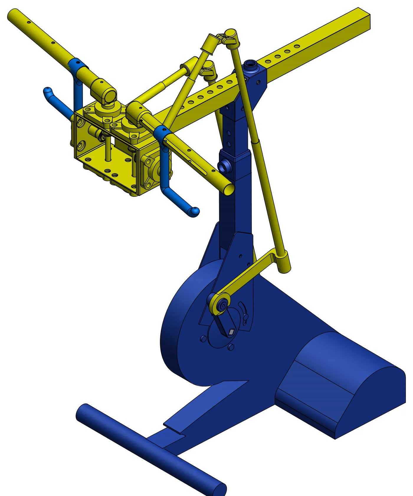
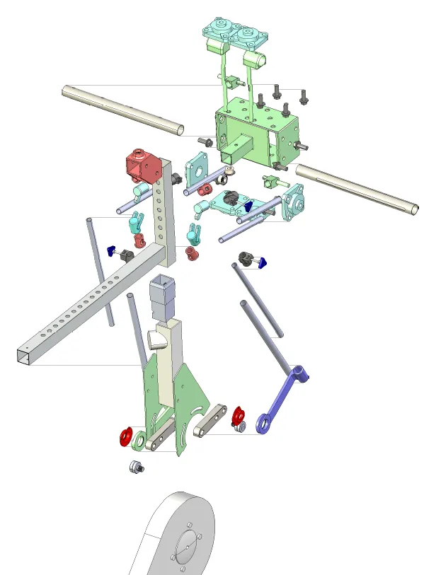
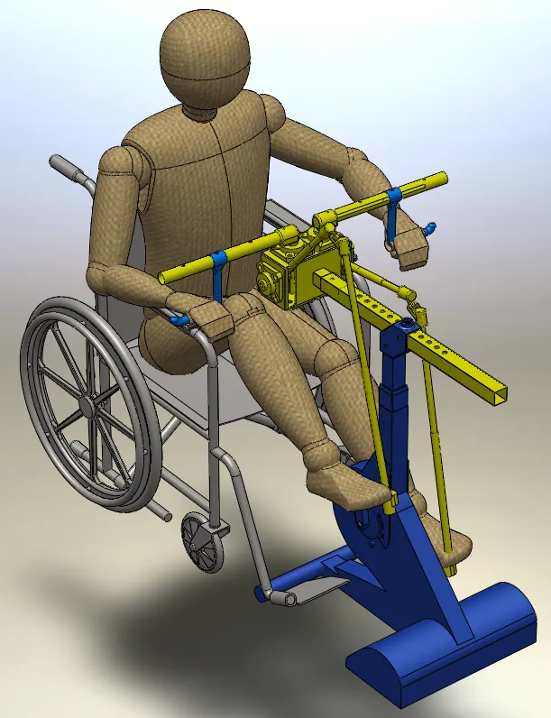
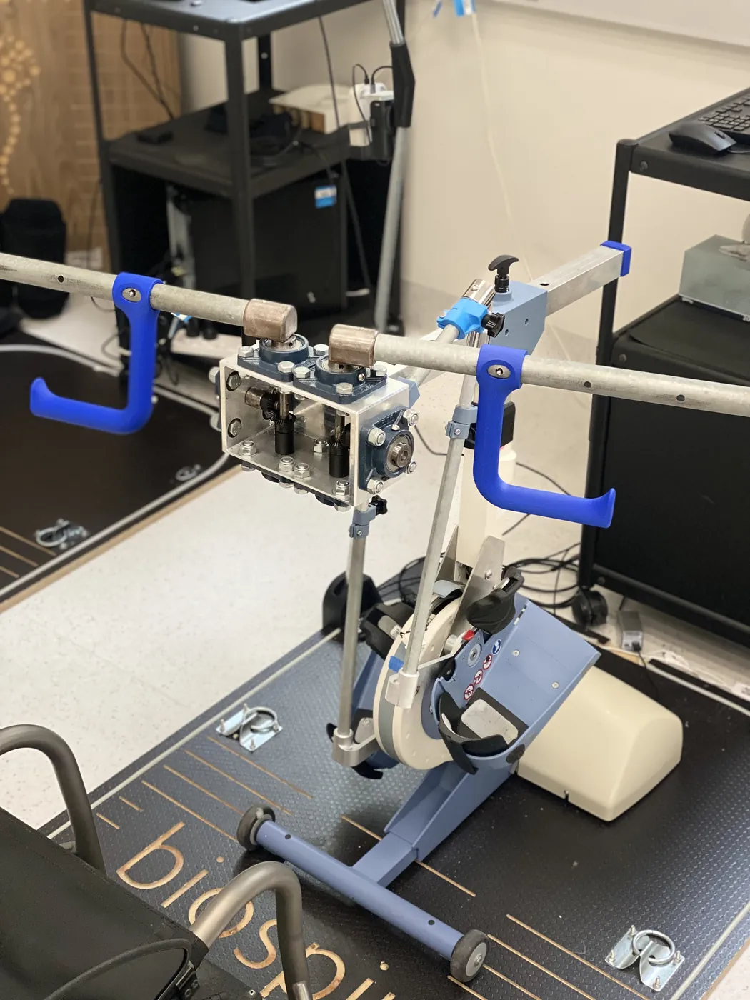

Internship · ACPHT BioSpine
RT300 upper-limbretrofit analysis
The BioSpine team’s prototype turned the RT300SL, a leg-cycling rehabilitation ergometer, into an arm-cycling machine. It worked, but its geometry had not been optimised or fully understood. My job was to find which configurations give a suitable handle motion and stay reachable for users of different sizes.

- Role
- Mechanical engineering intern, 6002ENG Industry Affiliates Program
- When
- Nov 2025 to Mar 2026
- Where
- ACPHT BioSpine Lab, Gold Coast
- Supervisors
- Dr Alastair Quinn, Dr Van Dau
- Tools
- SolidWorks Motion, Excel, Python, PMKS+
- Delivered
- Thesis, A1 poster, presentations
Outcome
Across eight configurations, the geometry mostly changed one thing: how far the handle travels. That stroke sets how far the shoulder, elbow and wrist have to move and who can reach the handle, so the work ends with a procedure for choosing it.
- 108.6 to 291.5 mmHandle stroke across the eight configurations. Crank length was the strongest control.
- T2 onlyThe 60.4 mm short crank was the only configuration the small user could reach through a full turn. At baseline, 27.5% of the cycle was out of reach.
- 39.4° wristLarge user, wide grip: peak wrist range of motion, above the 23.4° reported for arm-crank ergometry. Shoulder and elbow stayed at or below theirs. Angle definitions differ, so this is context only.
Configuration procedure (thesis Fig. 37 and poster)
- Set stroke first, with the crank (and coupler).
- Check Layer 1: the handle path and the transmission-angle range.
- Check Layer 2: shoulder, elbow and wrist range of motion.
- Screen full-cycle reachability for the smallest user. If any part of the cycle is out of reach, reduce stroke or adjust the setup, then check again.
Problem
The RT300SL is a motor-driven cycling ergometer for lower-limb therapy, and it can be used with functional electrical stimulation to activate muscles. BioSpine retrofitted an upper-limb, arm-cycling mechanism that runs off the same crank drive. The prototype produced motion, but four things were unknown: the handle path, the stroke, the joint range of motion it asks of the user, and whether users of different sizes can use it at all.
Research questions
- What handle path does each retrofit configuration produce?
- How do geometry changes affect stroke length and posture?
- What joint motion does the device impose on the user?
- Which user sizes stay feasible without compensating with the trunk or shoulder girdle?
Constraints
- Scope
- Kinematics only. The crank is motor-driven in the model, so the results are positions and angles, not forces, torque or comfort.
- Geometry
- The supplied STEP file showed the prototype, but it had no robust mates and no editable parameters, so it could not be simulated as it was.
- Solver
- The full assembly made SolidWorks Motion unstable through redundant constraints.
- Time
- One trimester. I started in OpenSim and got as far as a calibrated model of the RT300 with a seated person, but modelling the retrofit’s linkage and gearbox there needed more custom development and validation than the timeline allowed, so the analysis moved to SolidWorks.
- Posture
- The shoulder is held fixed: no trunk lean or shoulder-girdle movement. That makes the reach screen conservative on purpose.
My role
I did the modelling and the analysis: rebuilt the CAD from the supplied STEP file, set up and ran the motion studies, processed the exports, built the inverse kinematics and the reach screen, and wrote the thesis, poster and presentations.
The prototype and the original geometry came from the BioSpine project team. I worked under the supervision of Dr Alastair Quinn and Dr Van Dau as part of Griffith’s 6002ENG Industry Affiliates Program.
Approach
Two layers, kept separate so every result can be traced back to a geometry change. Layer 1 is the device on its own. Layer 2 puts a person on it.
-
Rebuilding the model
I broke the imported geometry into parts, reconstructed features where I could, and rebuilt the assembly from the ground up so that parameters could change and motion studies could repeat. The result was a 34-part assembly in two variants: one with an anthropometric dummy in a wheelchair to set the interaction points and posture, and one without it for mechanism-only analysis.
The analysis model went through eleven versions. Because the full assembly made the solver unstable, the studies ran on a simplified model that keeps only what the handle kinematics and the human interaction points need.

Fig. 02Exploded retrofit assembly 
Fig. 03Dummy user for interaction points -
Layer 1: device kinematics
SolidWorks Motion turned the crank at 30 rpm, one 2.0 s revolution per test, exporting every 0.008 s for 251 samples per cycle. Each run exported the crank angle and the 3D positions of the handle centre and the linkage joints in one coordinate frame, so every test compares like with like.
A baseline and seven variations, each changing one parameter: crank length, coupler length, handle height or grip width. As a check on linkage posture I tracked the transmission angle μ, the angle at joint B between the coupler and the rocker.
Test matrix (changed value in copper) Test Crank OA, mm Coupler AB, mm Handle height, mm Grip width, mm T1 Baseline 110 580 336.74 359 T2 Short crank 60.4 580 336.74 359 T3 Long crank 151 580 336.74 359 T4 Short coupler A 110 549.52 336.74 359 T5 Short coupler B 110 534.3 336.74 359 T6 Low handle 110 580 306.74 359 T7 High handle 110 580 386.74 359 T8 Wide grip 110 580 336.74 429 Fig. 04From CAD to the Layer 1 linkage schematic Fig. 05Simplified analysis model in motion, handle path traced -
Layer 2: the user
The arm is two rigid links, upper arm L1 and forearm L2, for three user sizes from anthropometric data: large (411 and 315 mm), medium (379 and 290 mm) and small (348 and 267 mm). For each crank angle, the elbow angle comes from the cosine rule on the triangle formed by L1, L2 and d, the shoulder-to-wrist distance.
cos θe = L1² + L2² − d²2 L1 L2Elbow angle from the cosine rule, with the argument clamped to [−1, 1] for numerical stabilityThe wrist is reachable only if |L1 − L2| ≤ d(θ) ≤ L1 + L2. A configuration counts as reachable only if that holds for the whole cycle.
Fig. 06Arm and linkage in one schematic: joint angles and the reach condition Fig. 07Reach test for the small user. The wrist has to stay in the shaded ring -
Processing pipeline
The same pipeline ran for every configuration, so a change in the results always traces to a change in the geometry.
- SolidWorks MotionOne crank turn at 30 rpm, exported every 0.008 s: 251 samples per cycle
- ExportCrank angle and 3D positions of the handle and linkage joints, one coordinate frame
- Excel post-processingStroke, mean handle height and the transmission-angle envelope for each test
- Layer 1Device kinematics: handle path, stroke, μLayer 2Inverse kinematics and the reach screen, per user size
- ResultsTables and figures, with Python for the poster heatmap and polar plots
Watch the motion study
Every frame here is a joint position from the SolidWorks Motion export, all eight tests, replayed at 30 rpm. The gearbox at P turns the rocker’s swing into a level handle stroke. The arm reaches from a fixed shoulder to the exported wrist point; pick a user size to see where on the turn the wrist falls out of reach.
Results
The handle path stayed a near-horizontal stroke in every test, and the transmission angle stayed between 76.4° and 159.8° across all eight. What changed was the stroke. Joint range of motion followed it, and reach mostly did, with handle height also playing a part.
Handle stroke by configuration
One crank turn, all eight configurations. Crank length moved the stroke most. The dashed line is the baseline, 201.9 mm.
- Crank length changed
- Other parameter changed
- Baseline
Table view
| Test | Stroke, mm | Mean handle height, mm | μ min, ° | μ max, ° |
|---|---|---|---|---|
| T1 Baseline | 201.87 | 336.74 | 83.98 | 138.30 |
| T2 Short crank | 108.64 | 336.74 | 95.44 | 120.10 |
| T3 Long crank | 291.51 | 336.74 | 76.36 | 158.90 |
| T4 Short coupler A | 218.44 | 336.74 | 83.83 | 149.21 |
| T5 Short coupler B | 235.09 | 336.74 | 83.83 | 159.76 |
| T6 Low handle | 196.76 | 306.74 | 81.05 | 132.71 |
| T7 High handle | 217.39 | 386.74 | 89.36 | 150.68 |
| T8 Wide grip | 272.71 | 336.74 | 83.98 | 138.30 |
Small-user reach over one crank turn
Shoulder-to-wrist distance for the small user. Above the dashed line the arm cannot reach, and the shaded area is the part of the cycle lost. Pick a configuration to compare it with the baseline.
- T1 Baseline
- T2 Short crank
- Reach limit, 615 mm
T1 Baseline
- Stroke
- Transmission angle
- Large user ROM, S / E / W
- Medium user out of reach
- Small user out of reach
- Small user peak distance
Table view
| Test | Small user peak distance, mm | Small user out of reach, % of cycle | Medium user out of reach, % of cycle |
|---|---|---|---|
| T1 Baseline | 643.9 | 27.5 | 0.0 |
| T2 Short crank | 601.8 | 0.0 | 0.0 |
| T3 Long crank | 692.8 | 36.7 | 17.5 |
| T4 Short coupler A | 656.4 | 29.9 | 0.0 |
| T5 Short coupler B | 679.6 | 35.1 | 11.6 |
| T6 Low handle | 654.4 | 34.7 | 0.0 |
| T7 High handle | 639.1 | 21.5 | 0.0 |
| T8 Wide grip | 679.8 | 37.8 | 14.7 |
Stroke against small-user reach
Each point is one configuration. More stroke generally means more arm movement and less of the cycle in the small user’s reach. Only T2 gets to zero.
- Fully reachable
- Out of reach for part of the cycle
Large-user joint range of motion
Across the eight configurations, in degrees, against arm-crank ergometry at 60 rpm from the literature. Shoulder and elbow stay at or below it and the wrist goes past it. Angle definitions and posture differ between the studies, so the benchmark is context only.
- Range across T1 to T8
- Baseline T1
- Arm-crank benchmark
- Shoulder15.7 T242.5 T342.8
- Elbow19.5 T260.5 T368.9
- Wrist16.5 T239.4 T823.4
Table view
| Joint | Lowest, ° | Baseline T1, ° | Highest, ° | Arm crank, ° |
|---|---|---|---|---|
| Shoulder | 15.7 (T2) | 29.5 | 42.5 (T3) | 42.8 |
| Elbow | 19.5 (T2) | 37.6 | 60.5 (T3) | 68.9 |
| Wrist | 16.5 (T2) | 27.5 | 39.4 (T8) | 23.4 |
Suitability by user size
Reachability treated as a hard constraint: suitable only if the wrist stays in reach for the whole cycle.
- Suitable
- Not suitable
| User size | T1 | T2 | T3 | T4 | T5 | T6 | T7 | T8 |
|---|---|---|---|---|---|---|---|---|
| Large user | Suitable | Suitable | Suitable | Suitable | Suitable | Suitable | Suitable | Suitable |
| Medium user | Suitable | Suitable | Not suitable | Suitable | Not suitable | Suitable | Suitable | Not suitable |
| Small user | Not suitable | Suitable | Not suitable | Not suitable | Not suitable | Not suitable | Not suitable | Not suitable |
Media
The physical prototype, the motion study with the dummy user, the four-bar in PMKS+ and the A1 poster. The clips are silent and play while they are on screen.

Next steps
The thesis is geometry-based design guidance, not clinical validation. The future work I set out:
- Add seat and shoulder position as design variables, to find the smallest adjustment that makes the small user feasible.
- Recompute wrist kinematics for medium and small users with one consistent grip definition.
- Extend Layer 2 to 3D, including trunk and shoulder-girdle movement, and report joint angles to ISB conventions.
- Replace the spreadsheets with a scripted, version-controlled pipeline with automated checks.
- Bring gear ratio back only once dynamics and comfort targets exist.
- Validate the joint kinematics experimentally, using established biomechanical reporting conventions.
Reflection
I chose this project because it is the strongest example of my technical development so far. During this internship, I moved beyond classroom-only learning and applied engineering analysis in a practical and professional environment. Evaluating the motion behaviour of a retrofit mechanism required careful thinking, attention to detail, and a structured approach to problem-solving.
It reflects the kind of engineering work I want to continue doing, especially in roles involving design, analysis, and improving system performance.